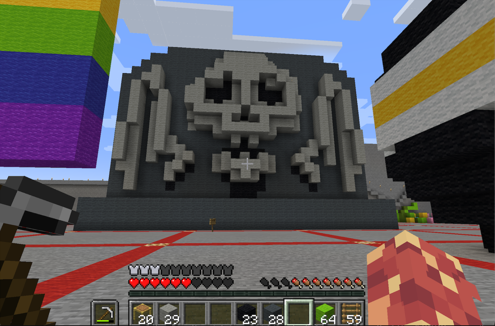

This is the in-world view of the headstone model that would eventually be 3d printed. I used minecraft as a low-poly and affordable 3D modelling software and converted the sculpture to a mineways file before printing.
The mineways data can be viewed here:Images of the Work:
